From wilderness to the future
Step away from your computer and watch an empty patch of land grow, era by era. Come back and your city is right where you left it, ready to keep growing next time.
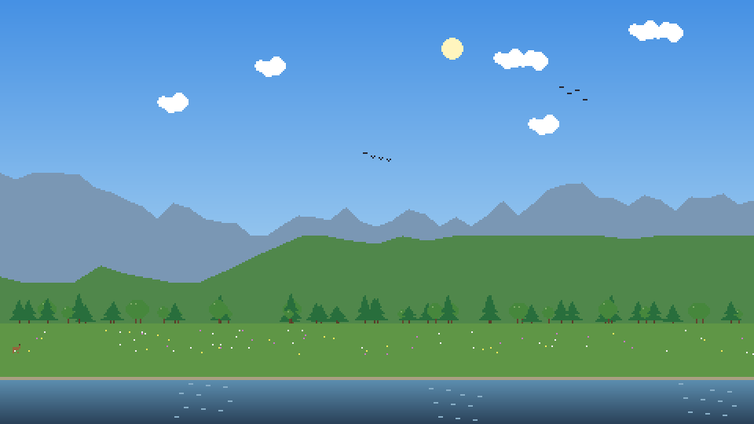
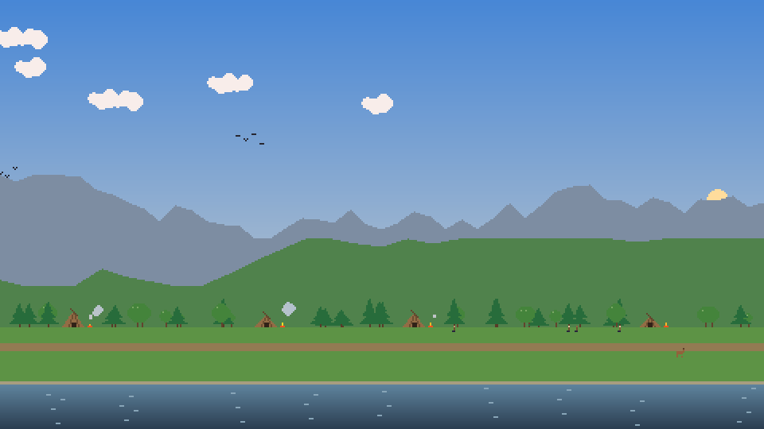
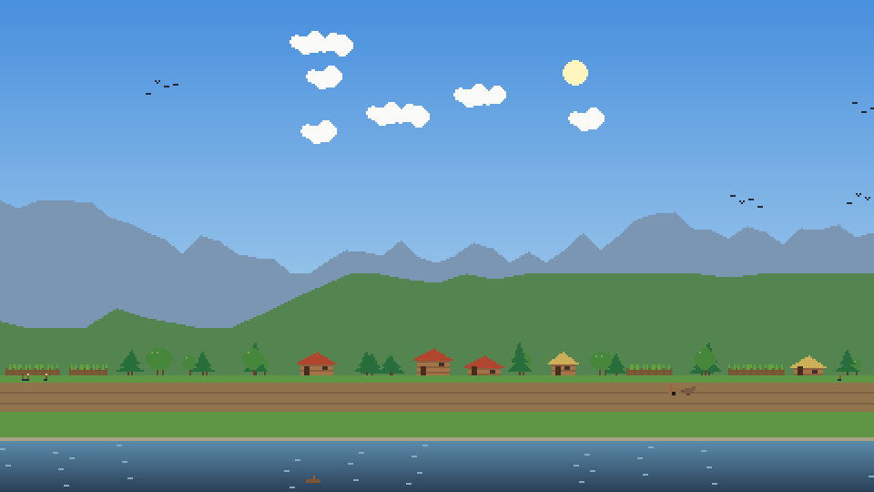
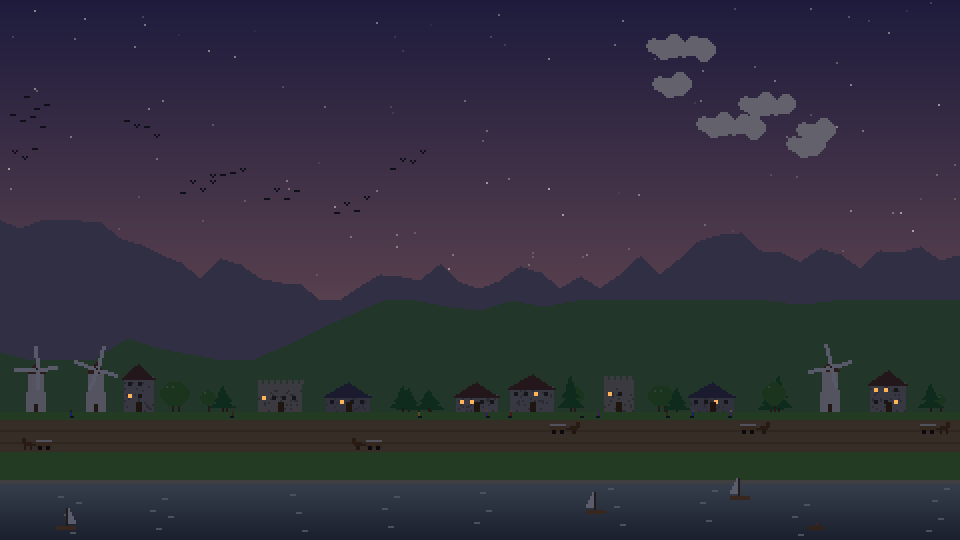
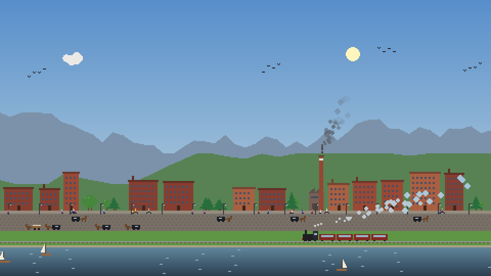
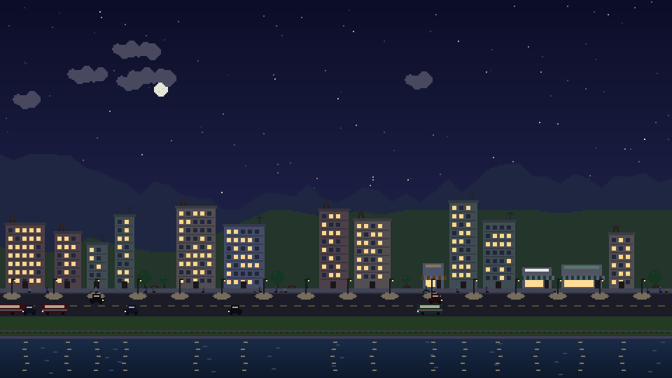
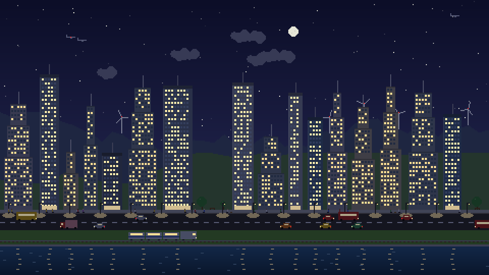
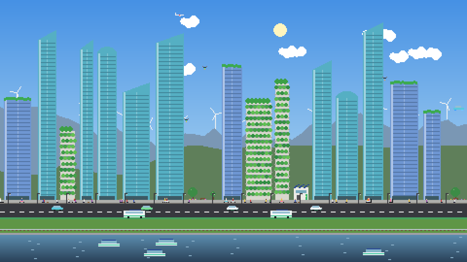
A city that feels alive
There's always something happening, so it's worth a glance every time you walk past.
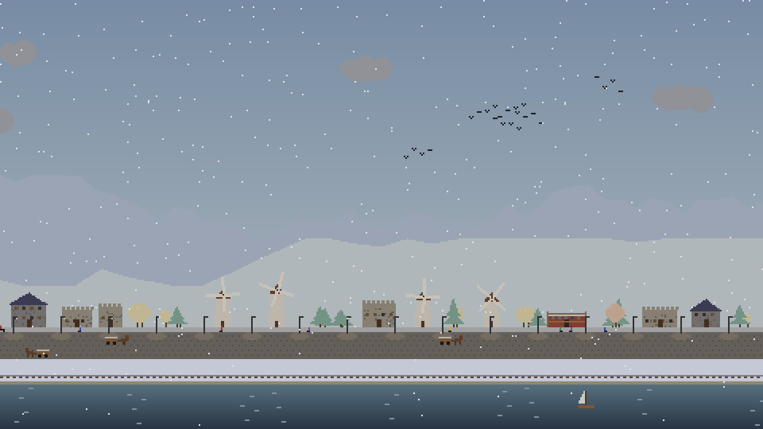
Seasons and weather
A year passes every half hour. Blossom in spring, golden autumns, snowy winters, rain and summer thunderstorms.
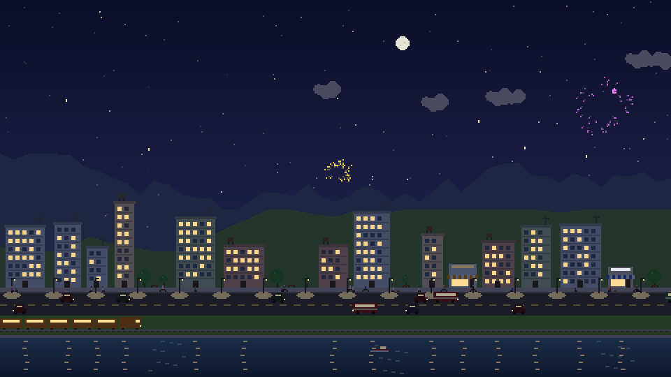
Celebrations
Fireworks for each new era, and festivals that suit the times: bonfires, harvest fairs, brass bands, parades, carnivals and drone shows.
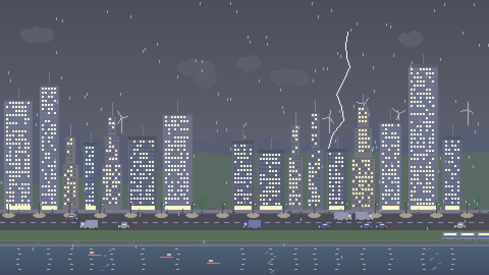
Day and night
Sunsets, stars and lit windows, with smog that comes with industry and clears again in the green future.
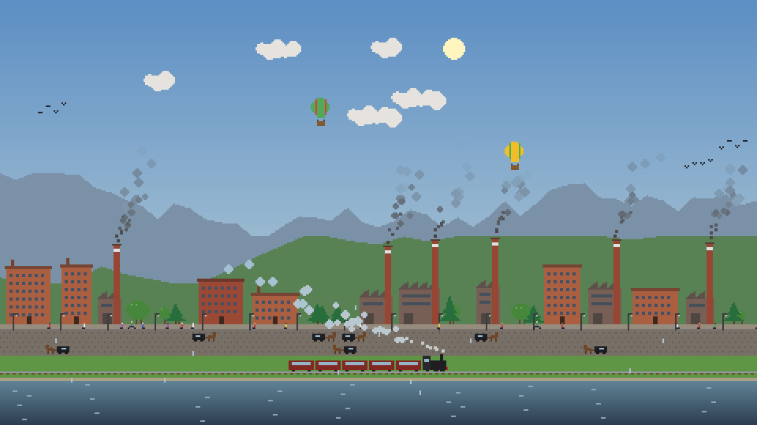
Life on every street
Wolves and bears, grazing cows, ducks on the river, pigeons, traffic, trains, boats and hot-air balloons.
Hard times
Now and then a fire, a flood or a plague strikes, and you watch the city recover and rebuild.
Always growing
Your city is saved as it grows, and starts over from wilderness once it has enjoyed the green future.
Light on your laptop
Fills every monitor, uses little power, and slows down on battery.
Install
Takes about a minute.
- Download TinyCity.scr.
- Right-click it and choose Install.
- Set how many idle minutes to wait, then click OK.
Click Settings in the same window to choose how long each era lasts, see how far your city has grown, or start a new one.
"Windows protected your PC"?
Tiny City isn't signed with a paid certificate, so Windows may warn you the first time. Click More info, then Run anyway.
It's open source: you can read every line, or build it yourself, on GitHub.